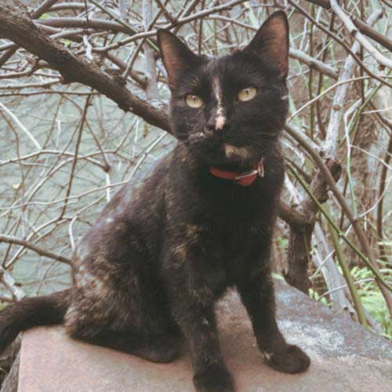

Tila
Sexo: Hembra
Edad: 5 años
Tila es una gata color negro, carey, con un carácter muy fuerte. No se lleva con otros felinos, pero ama a los perros. No le gusta que la acaricien si no quiere, así que suele morder. De vez en cuando le gusta mostrar afecto y se duerme encima o pide cariño. Hay que mantenerla activa porque actualmente se encuentra en sobrepeso. Tiene todas las vacunas al día y si la adoptas vas a poder traerla a la facultad para que puedan atenderla totalmente gratis.
